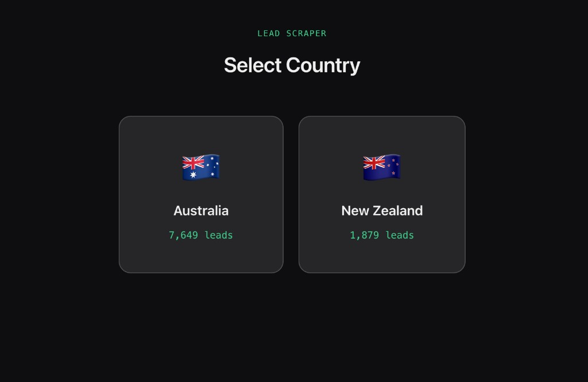
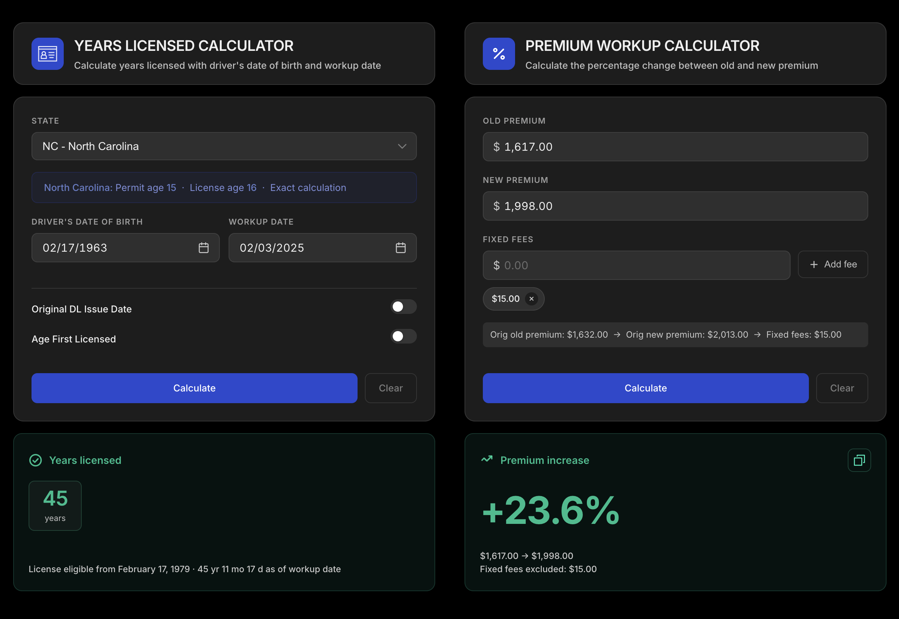
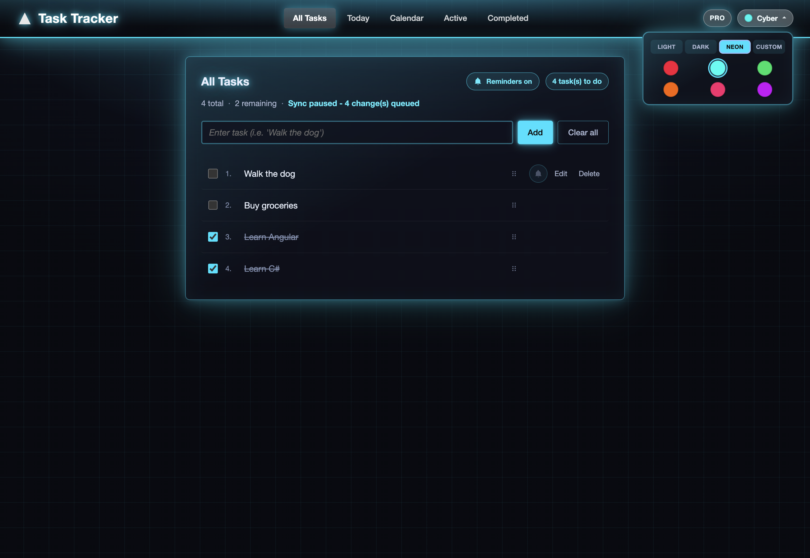
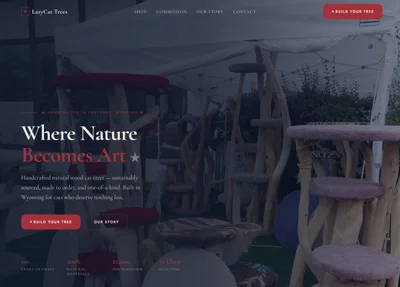
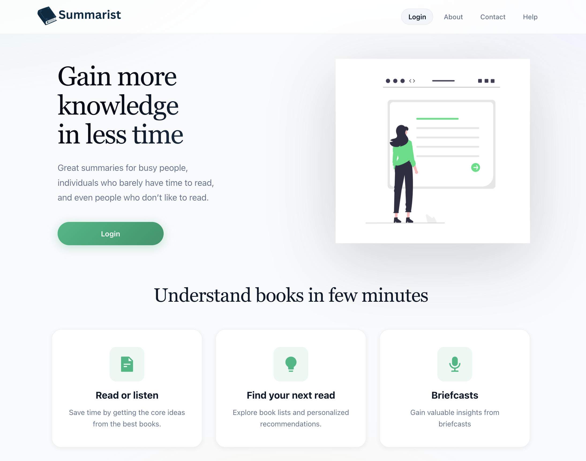
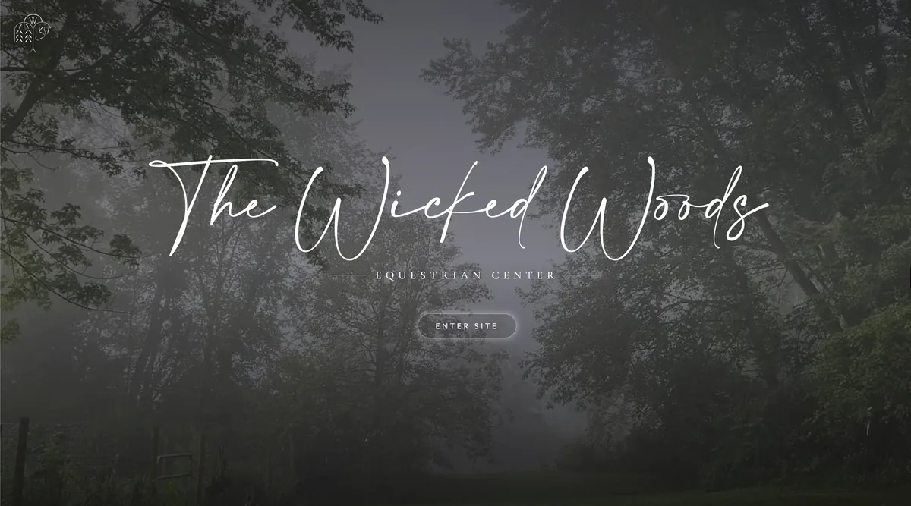
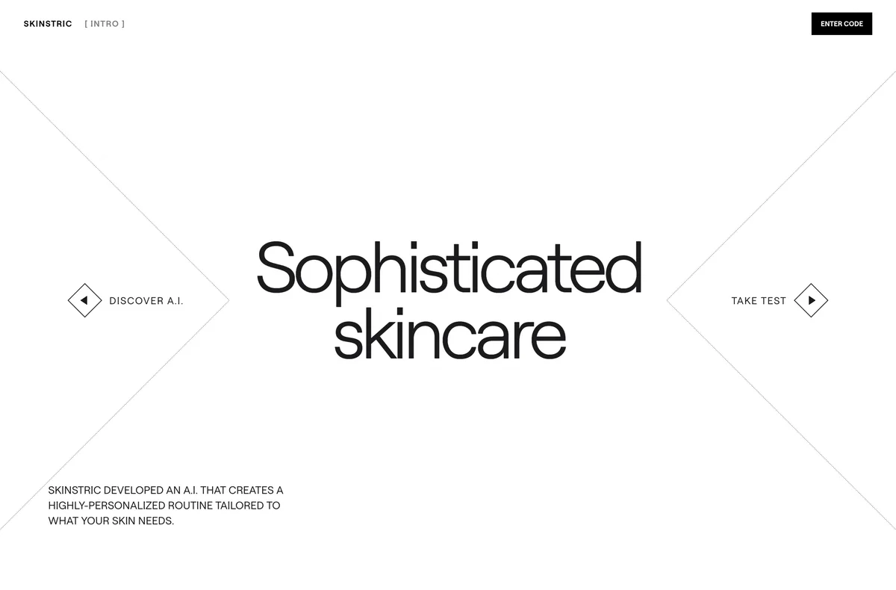
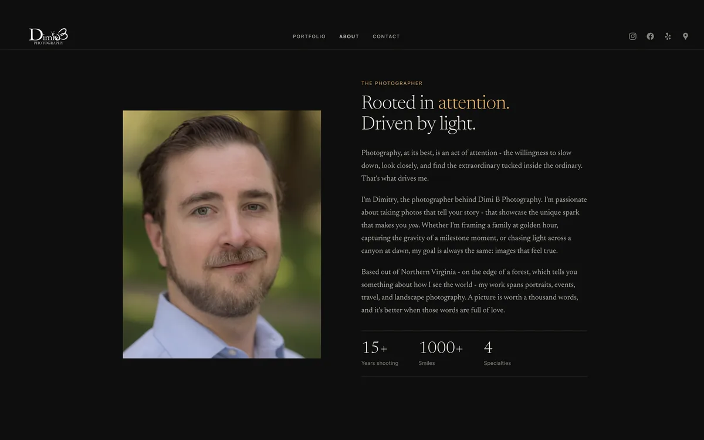

Building
interfaces
that just work.
I'm Mark Waldron, a software developer focused on React, TypeScript, AI-enabled automation, and reliable tools for real-world workflows.
About
Software developer with insurance expertise and a builder's instinct.
I'm a software developer with seven years at Progressive, where my experience in underwriting has shown me how thoughtful technology can improve complex, highly regulated workflows.
I build tested web applications, internal tools, and AI-enabled automation using React, TypeScript, Next.js, Node.js, SQL, and external APIs. My work includes an underwriting calculator piloted by Progressive colleagues with 100% logged accuracy and a lead intelligence platform that processed 7,649 Australian and 1,879 New Zealand businesses across 101 markets and was estimated to replace more than $25,000 in manual research.
I'm looking for a long-term software engineering opportunity where I can combine insurance knowledge, product judgment, and hands-on development to build reliable software that solves real business problems.
Stack & toolkit
languages
frameworks
services
design & tools
Featured work

Lead Scraper Client Tool
Full-stack lead generation app for a real business workflow, combining Google Places data, AI contact extraction, ABN matching, and data enrichment.

AP Workup Tool
Insurance workup calculators for checking driver experience and premium changes, with theme support and full CI-backed test coverage.

Task Tracker
Full-stack task manager with an Angular PWA and ASP.NET Core API, featuring offline synchronization and automated testing.
Lead Scraper
AP Workup Tool
Task Tracker

LazyCat Trees

Summarist Library

The Wicked Woods Equestrian

Skinstric

DimiB Photography
Cryptogram
Let's build
something together.
Open to software engineering opportunities involving frontend applications, workflow automation, and AI-enabled products. If your team is building practical software for real business problems, I'd be glad to talk.
contact@mark-waldron.com ↗